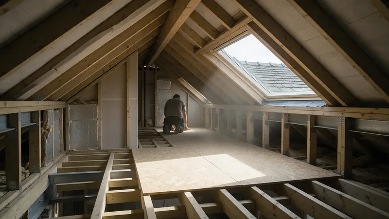
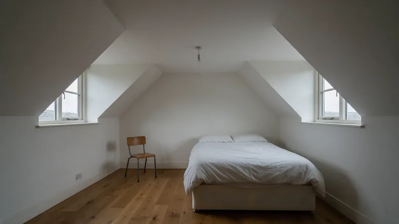
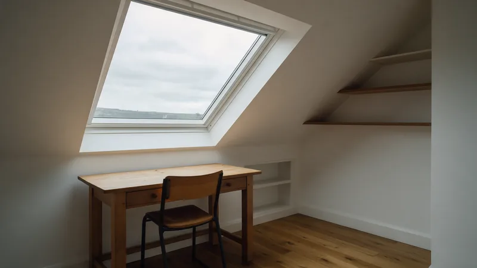
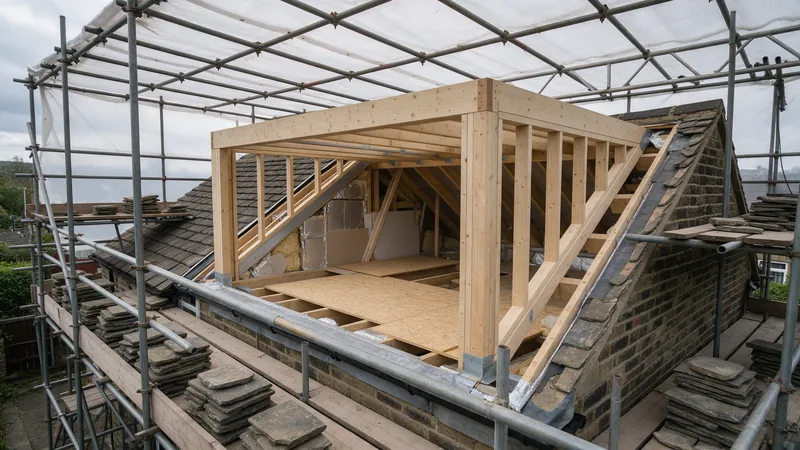
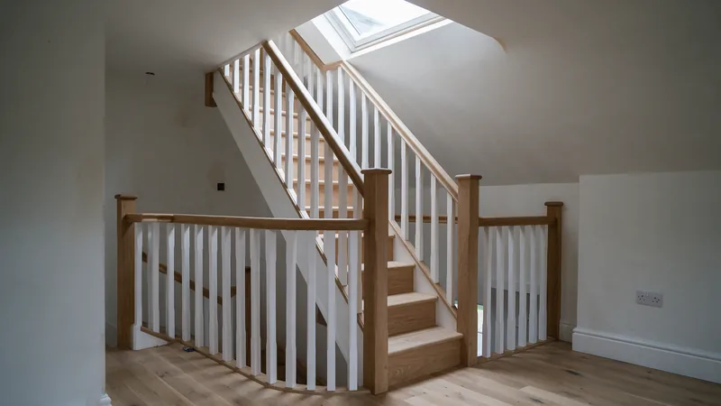
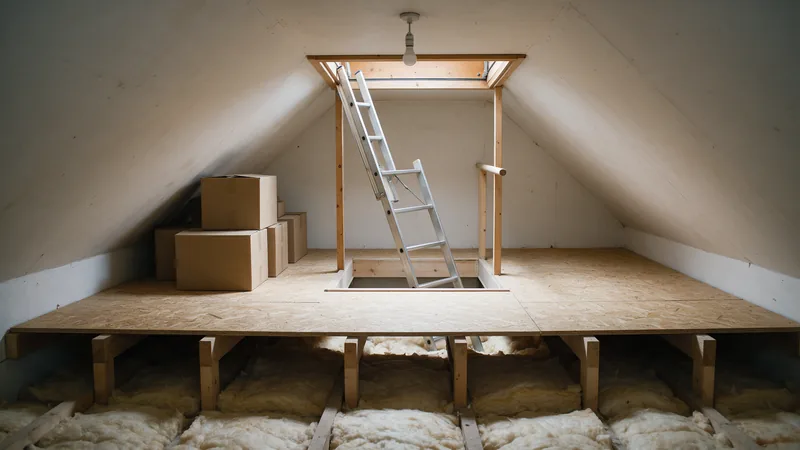

Our work
Sixteen sample jobs.
Made up jobs with pictures generated for this demo. Half of them are the part of a loft conversion nobody photographs, which is the floor, the steels and the lining out, because that is where the money goes and it is what you are actually buying.
16 jobs

Generated photoNew floor in, roof still openHolmfirth · Sample
Generated photoDormer room, finishedMirfield · Sample Generated photoRoof line left aloneSlaithwaite · Sample
Generated photoRoof line left aloneSlaithwaite · Sample Generated photoShower where the roof is highestDewsbury · Sample
Generated photoShower where the roof is highestDewsbury · Sample
Generated photoA desk under the slopeKirkburton · Sample Generated photoCupboards in the low bitHolmfirth · Sample
Generated photoCupboards in the low bitHolmfirth · Sample Generated photoBox out across the backMirfield · Sample
Generated photoBox out across the backMirfield · Sample
Generated photoFramed up and sheeted overDewsbury · Sample Generated photoThe pointed end squared offMirfield · Sample
Generated photoThe pointed end squared offMirfield · Sample Generated photoSteels on their padstonesSlaithwaite · Sample
Generated photoSteels on their padstonesSlaithwaite · Sample Generated photoA floor that carries a roomDewsbury · Sample
Generated photoA floor that carries a roomDewsbury · Sample Generated photoTwo layers and an air gapKirkburton · Sample
Generated photoTwo layers and an air gapKirkburton · Sample Generated photoLined out, ready for plasterHolmfirth · Sample
Generated photoLined out, ready for plasterHolmfirth · Sample
Generated photoOak and paint, going upKirkburton · Sample Generated photoThe hole in the ceilingSlaithwaite · Sample
Generated photoThe hole in the ceilingSlaithwaite · Sample
Generated photoBoards up off the insulationDewsbury · SampleFilter by the sort of job. Tap a picture for the detail. Every one is a sample.
Something here look like your house?
Tell us which one and your postcode, and we will come and see whether your loft can do the same.